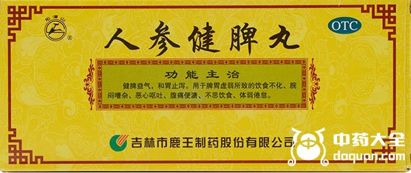
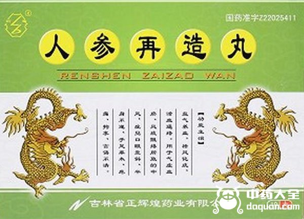
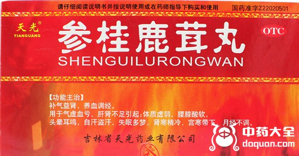
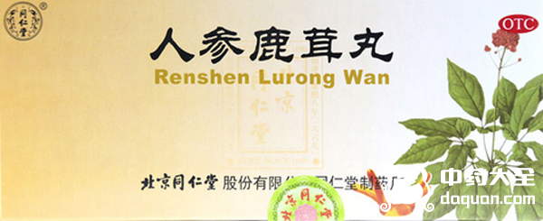
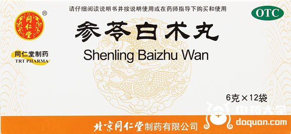
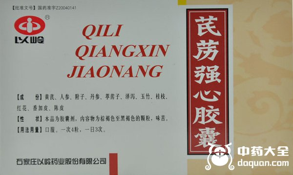
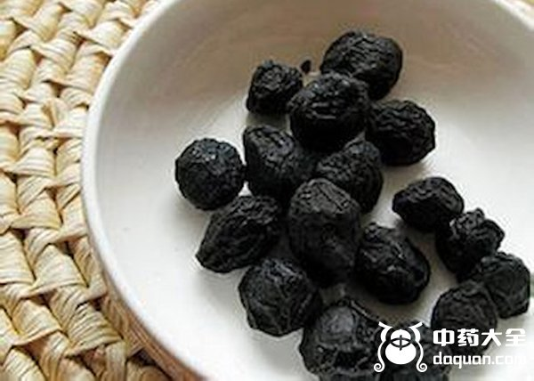
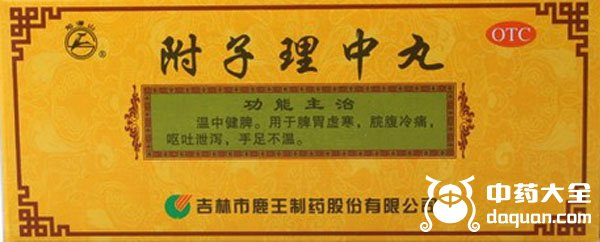

人参从古至今都被认为是上品，昂贵且大补，营养价值丰富故有“百草之王”的称号。目前药学领域已知的人参的功效有增强免疫力、调节血压、延缓衰老、提高记忆力、抗疲劳、抗癌、补肾壮阳等，有条件的人家会用参片泡水或者与红枣，土鸡等一起炖煮，这是比较日常的做法。除此之外，现在也有大量中成药是以人参入药，下面列举几种含人参的中成药。
1、 人参健脾丸

人参健脾丸是由人参、炒白术、茯苓、山药、陈皮、木香、砂仁、炙黄芪、当归、炒酸枣仁、制远志等药材制成。健脾益气乃人参、白术、茯苓、黄芪之功;山药、陈皮、砂仁有调理肠胃的功效;木香理气，当归养血。几味药材合用，从而达到健脾益气，和胃止泻的效果。与健脾丸功效相似的还有人参归脾丸，适用于脾虚乏力，气血不足之症。
2、 人参再造丸

人参再造丸由人参、蕲蛇、龟甲、地龙、僵蚕、川芎、全蝎等56味药材组成，具有益气养血，活血通络，祛风化痰的作用，通常用于治疗气血瘀滞，风痰阻络造成的中风，常见症状像口眼歪斜、半身不遂、四肢丧失知觉、痉挛、语言能力失调等。
3、参桂鹿茸丸

参桂鹿茸丸由人参、鹿茸、山茱萸、龟甲、鳖甲、阿胶、杜仲、续断、沉香、当归、川芎、肉桂等39味药材。具有补气益肾，养血调经的功效。用于治疗气血亏虚，肝肾不足引起的体弱，如腰酸乏力，头晕耳鸣，盗汗，睡眠不佳，肾寒宫寒、月经不调等症状。
4、 人参鹿茸丸

与参桂鹿茸丸相似，其主要成分有人参、鹿茸、补骨脂、巴戟天、当归、杜仲、牛膝、茯苓、菟丝子、黄芪、龙眼肉、五味子、黄柏、香附、冬虫夏草。能起到滋养肾精，益气补血的作用。可用于改善肾精不足，气血两亏，视力听力下降，腰腿酸软。宜饭前服用。
5、 参苓白术丸

参苓白术丸主药为人参、茯苓、白术、山药、白扁豆、薏苡仁、砂仁、桔梗、甘草。主要功效是健脾益气。用于改善体虚乏力，食欲不振，大便不成形。不宜和感冒类药同时服用。
6、 芪苈强心胶囊

芪苈强心胶囊由黄芪、人参、附子、丹参、葶苈子、泽泻、玉竹、桂枝、红花、香加皮、陈皮组成，有温阳益气，活血通络，利水消肿的作用。可用于调理冠心病、高血压病所致轻、中度充血性心力衰竭导致的阳气虚乏，有心慌气短，下肢浮肿，乏力，小便短小，怕冷等症状的朋友可以选择服用。如果正在服用其它治疗心衰的药物，不宜突然停用。
7、 乌梅丸

乌梅丸具有缓肝调中，清上温下之功效，其主要成分为乌梅肉、黄连、黄柏、附子、干姜、桂枝、细辛等，可以作为驱虫剂治疗蛔虫。因为本品含有细辛，因此最好在医生指导下使用，并定期复查肾功能。
8、 附子理中丸

附子理中丸由附子、人参、干姜、甘草、白术组成。能养胃气，温脾散寒，止泻止痛。对于脾胃虚寒，腹痛，肠道痉挛等有一定疗效。现代常用于胃肠道溃疡、肠炎、消化道出血、痢疾等疾病的治疗。
结语：就像以上所提到的，同仁堂含人参的中成药有以上8种，虽说人参有补益作用，适合于体虚的人适当进补，但是如果体热易上火的人，不建议多食。